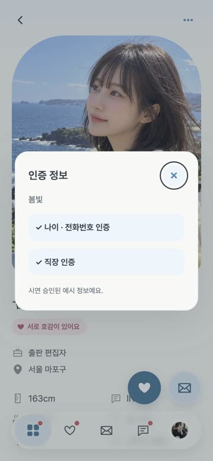
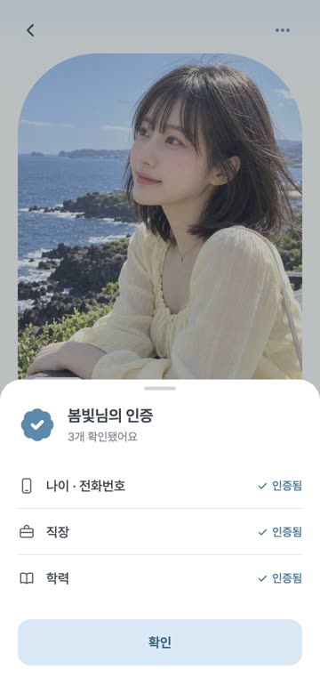
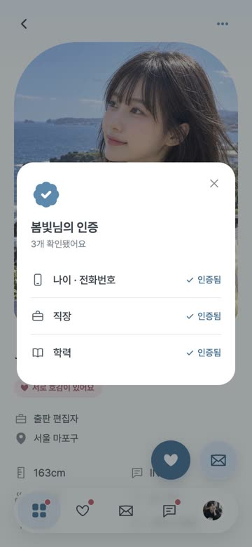
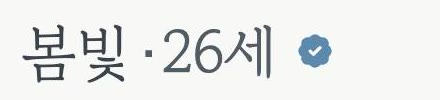
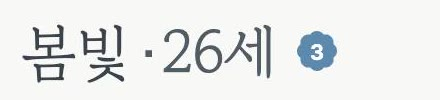
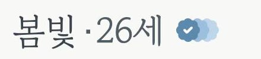
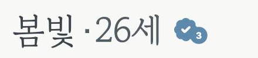
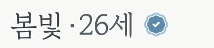

인증 정보 팝업 · 인증 배지
배지 모양(톱니 + 체크, 채운 파랑)과 선 굵기는 그대로 두고 정리했어요. 예시는 인증 3개(나이 · 전화번호, 직장, 학력)로 그렸어요.
1 · 배지를 누르면 나오는 인증 정보



공통으로 뺀 것: 하늘 칸 배경, 글자로 쓴 ✓, "시연 승인된 예시 정보예요." 줄. 종류 아이콘은 배지 · 인증 화면과 같은 그림(전화 · 가방 · 책 · 동전)이에요.
2 · 인증이 여러 개일 때 배지
| 안 | 홈 카드 · 2개 | 홈 카드 · 3개 | 프로필 · 3개 |
|---|---|---|---|
| 지금개수와 상관없이 같은 배지 하나 |  | ||
| 1 · 숫자2개부터 체크 대신 개수. 1개면 지금처럼 체크 |  | ||
| 2 · 겹친 배지뒤에 연한 하늘 배지가 개수만큼(최대 3) 비켜 겹쳐요 |  | ||
| 3 · 체크 + 개수 점체크 배지 그대로, 오른쪽 아래 작은 점에 개수 |  | ||
| 4 · 바깥 고리2개 이상이면 같은 톱니 모양 바깥 고리(sky-300, 선 1.6)가 한 겹. 개수는 팝업에서 |  |  |